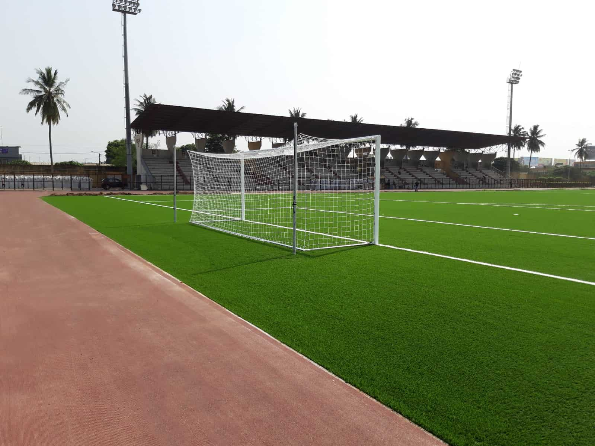
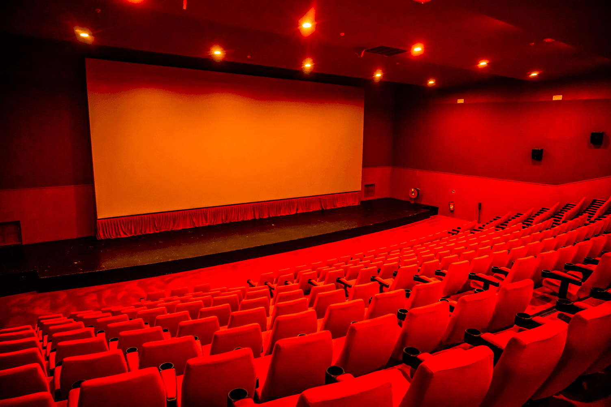

Yopougon regorge de lieux emblématiques mêlant modernité, traditions et vie urbaine. Des espaces culturels aux
centres de loisirs, découvrez les endroits incontournables qui font vibrer la commune. Ce guide est parfait pour
le découvrir Yopougon en famille ou entre amis et profiter pleinement du tourisme à
Abidjan dans cette zone dynamique.

Cosmos Yopougon
Le Cosmos est un lieu emblématique de Yopougon, reconnu pour sa vie nocturne animée. Il rassemble les
meilleurs maquis à Yopougon ainsi que des espaces culturels où le tourisme à
Abidjan s’épanouit pleinement. Parfait pour découvrir Yopougon en famille ou entre
amis, ce lieu symbolise l’effervescence et la convivialité de la commune.

Stade de Yopougon
Un lieu de rassemblement pour les matchs de football, les concerts et les grands événements populaires.

Cinéma Majestic
Un cinéma moderne où se rencontrent les passionnés de films, entre nouveautés locales et internationales.